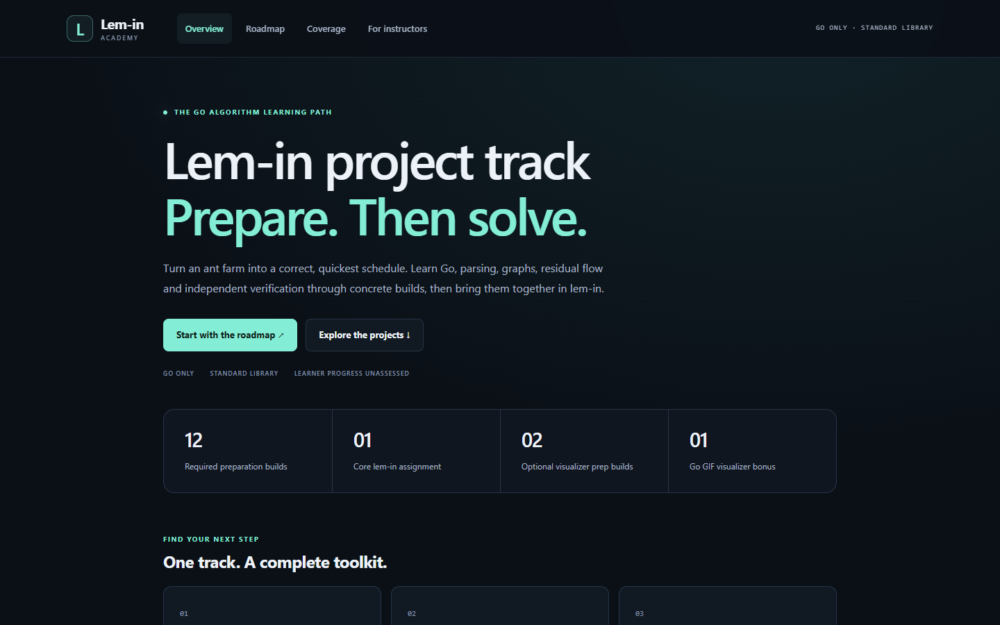
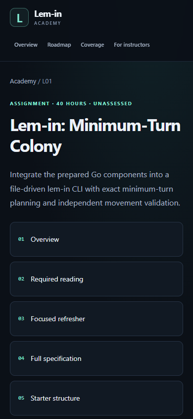

Validation record
Delivery checked on 29 October 2026. This record validates the curriculum, publication output, unfinished scaffolds and the teaching model. It does not certify a completed student solver or automatically assess learner progress.
Publication and scaffold checks
- 255 generated HTML pages across 16 full guides, including 228 guide chapters plus guide indexes and academy pages.
- Generated structure, local navigation/anchors/download paths, preparation dependency order and all 36 coverage rows checked with the Go hub checker.
- Every generated route checked through Go's static HTTP handler without a listening socket.
- All 16 nested starter modules compile with go test and pass go vet using the local Go toolchain. Their acceptance tests are explicitly skipped and core algorithms remain TODOs.
- The hub build/check tooling has separate tests for malformed markup, duplicate anchors and escaped navigation data.
Detailed structural/scaffold results · Pinned source hashes.
Independent algorithm-model experiment
A scratch experiment compared an exhaustive occupancy-multiset BFS with the time-expanded integer-flow feasibility model on all 3294 labelled graph/ant cases for V=2..5, terminals 0 and V-1, n=1..3. There were no mismatches and no budget skips. A separately targeted eight-room greedy trap with four ants also agreed at five turns. The experiment explored 25507 oracle states in total.
Model experiment results, methods and scratch-source hash. This tiny mathematical evidence complements the written correctness arguments. It is not a file parser, complete solver, performance audit or ready-made student solution.
Viewed layout and navigation
The static pages were rendered in Chromium at 1440×900 and 390×844, with dark color scheme and reduced motion. Every route was captured at both widths; overflow, main/heading presence and page loads were checked. Representative overview, guide, library and coverage screenshots plus route contact sheets were visually inspected. Home-to-roadmap, roadmap-to-guide, chapter-next/index navigation and starter download interactions were exercised at both sizes.
Browser review and per-route measurements. Download navigation cancellation is expected when the browser hands a ZIP to its download manager; the actual download filename is checked separately.




Reproduce the local publication checks
go run ./cmd/hub build
go run ./cmd/hub check -scaffolds
go test ./...
go vet ./...Limits and future gates
- Browser loopback networking was unavailable in the execution environment; visual checks used local file URLs, and the static HTTP handler was tested separately.
- Chromium mobile emulation is not a physical device, WebKit or screen-reader audit. Other browser/shell/viewer combinations remain unverified.
- Student acceptance tests, source audit solver performance, bonus rendering by student code and cohort estimates remain future instructional gates.
- Primary references were researched and pinned source content compared; future availability of every external URL is not guaranteed.
- Vercel configuration and real public output are included. No remote build, push, publication or deployment was performed.